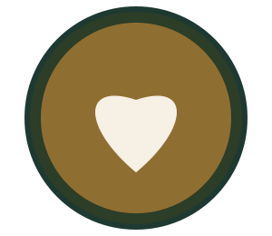
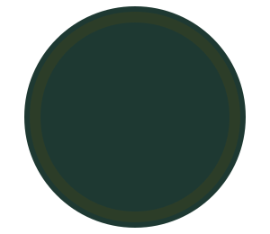

Tutorial interactivo
Arte Latte
Tres figuras clásicas, explicadas paso a paso. Elige una figura, avanza con los botones y practica en tu próximo turno.

Corazón
Paso 1 de 5
Secuencia de vertido
No contamos con video propio libre de derechos para esta versión del sitio, así que la técnica se muestra como una secuencia de imágenes ("flipbook") controlada por JavaScript — la alternativa que sugiere la guía del curso cuando no hay video disponible.
